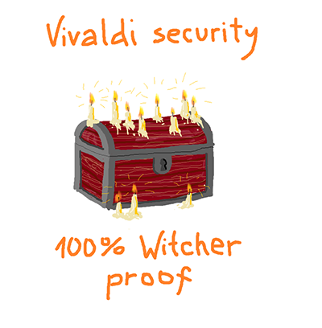
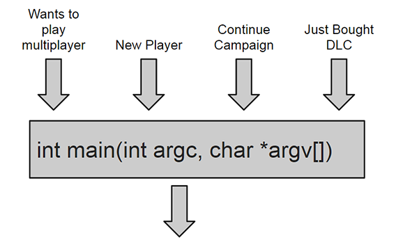
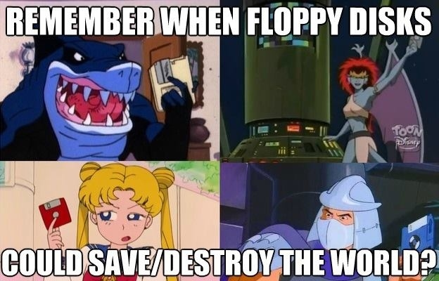
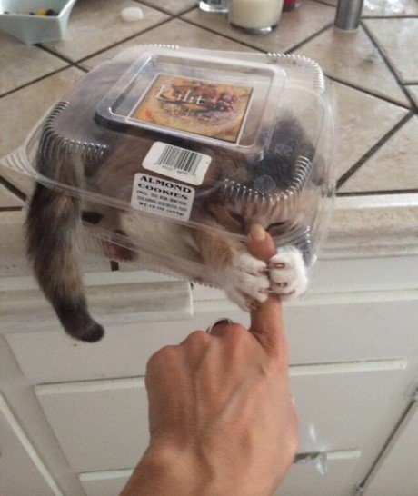
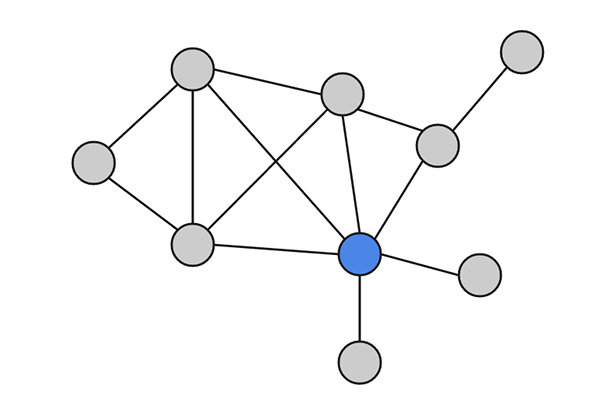
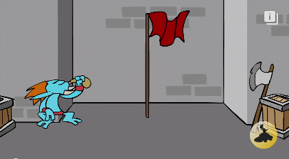
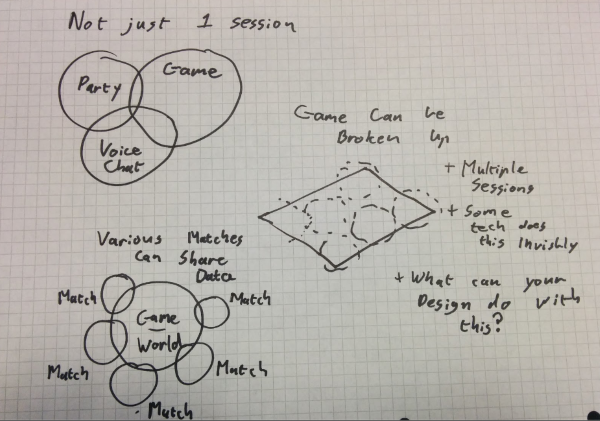
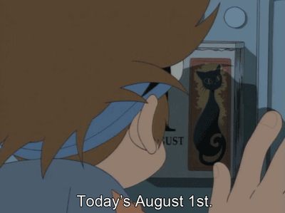
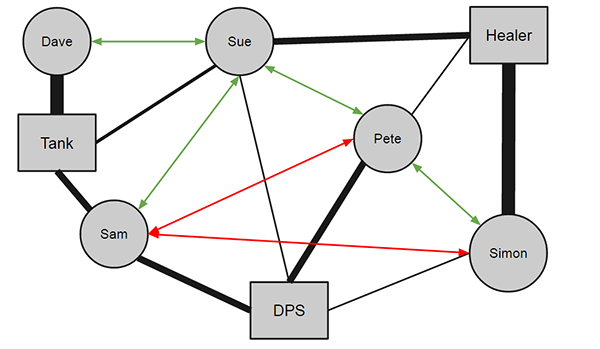

You are all creative
You just need the right tools
> Basic causes of laaag
> First 5min
> Servers
> Databases
> Discover alternate matchmaking designs
> End with some small tricks
We aren't a multiplayer game
[4]
Story driven offline title
Local co op only
All games are online
[5]
Every platform has a strong online component
Single player make use of a list of services …
No-one is offline
The Biggest Problem?
[6]
Shout Marco
… wait for Audience to say Polo …
That is a blocking call. You have to listening to me, think and then respond.
Do you need it NOW!
[7]
If 10% of the content on the screen is online can you fade it out until it loads in?
Does it need to be on the screen?
Can you use stale data, how stale is okay? Minutes, Hour, Day.
Does the user care if the first view of data is slightly out of date?
Mobile gives us some great design use cases here
Secure?

[8]
Engineers always approach things from point of security
Finally does it need to be secure?
Do you really need a handshake to get the data?
What’s involved in making it public?
The designer can loosen constraints and design around these issues, the network programmer has to just implement the spec so as designers you need to think how you can loosen these constraints.
Talking to the network team early is a huge help for these big decisions.
Knock knock… who’s there
[9]
The 1st step is saying hello, often to multiple servers
This involves finding the person you need to talk to, saying hello, proving you are who you say you are and often checking with a 3rd party you are who you say you are
Typical handshake is 5-10 messages
At 40ms latency that’s 200ms to 400ms with no delay, have seen handshakes take a second often in real world
First 5 minutes
[10]
All important opening
Nothing can happen until this step is complete
It’s critical you design the first 5 minutes of your game boot and be aggressive about managing that.
We already talk about optimising the hardware IO but you should be looking at the network calls as well.
Often in production rush people will init libraries or services earlier than needed and slow down your initial network response.
What is your flow? Network is down or unresponsive. Do you fail gracefully?
Players are happier offline than having a poor online experience don’t be afraid to turn off network features if your servers are overheating, or their connection is suffering.
If your 80% sure the player is going to play online can you start looking for games?
But it gets worse
[11]
MULTIPLE SERVERS
Now imagine this for multiple servers
...list...
Query allll the servers, and the databases.
All the data is organised around levels, or concepts
Player centric data
[12]
What if… data around the user.
To get a player view of that data we need to access a LOT of data.
Sometimes making multiple network calls to query different parts of a leaderboard service.
As alternative example, is it viable at the end of a play session or once per day or similiar building a player report.
This can be the first thing the player downloads from your server, with their data.
It is not complete and maybe not even the most up to data but its a bootstrap package of data to get the player up and running ASAP with most data they need.
Tip: If you have stats, generating interesting rich snippets in this report is very doable and cool.
Also think about what happens if that report is not built, for some reason what’s your fail case.
One door doesn’t fit all

[13]
Wants to play multiplayer
New Player
Continue Campaign
Just Bought DLC
Main Menu
Finally not every boot is the same
The player has an intent when they start your game
Most games however will just point them at the main menu
Predict player Intent
[14]
Though we have had startup arguments for ages.
Platforms also provide startup mechanisms.
Are they loading the game from an invite, go straight to the match.
Additionally you can check past behaviour, were they in the middle of level, jump to that with pause menu
Are they in a party take them to multiplayer setup
Supporting different entry points will allow you to optimize your starting flow and help you figure out what you MUST load.
It’s not the 90s anymore

[15]
When I mentioned servers people scream thinking of expensive server bills, pagers beeping in the middle of the night, troublesome 24/7 devops, driving in to manage the disaster and generally the horrors of the 90s.
Things are much better now! I’m happy to report.
Servers and Services
[16]
First off your spoiled for choice as a range of vendors and service options compete for your custom.
The price war has driven the cost, espcially on storage WAAAAAAAaaaaaaay down
These services have great automated tools to spin up new boxes as required and scale.
Everything from custom linux boxes running your own C code to something more managed like Google App Engine.
Most of which can be managed from your phone even in total failure cases
The Network Equation
[17]
Speed & Size are issues
CONSISTENCY!!! That's the real cost point
Quake vs Leaderboard vs Words with Friends vs Fluffy Data
Cost Breakdown
[18]
It breaks out into two areas in most cases, some services will supply a built in CDN
The first thing you will charged for in most systems, especially in traditional server setups is Instance Time multiplied by the quality of the server instance.
Costs are cheaper if you can be predictable in your usage but keeping your instance hours low is key to a low bill.
A cheap instance can be $0.013 to $5.520 per hour from a raspberry pi style machine to a beefy super box and the bill can be cut more than half if you can plan your instance use.
Storage is a complex box between static storage, big table, rdbs and such but you can store gigabytes for pennies again.
Bandwidth varies because transfer internally is free often and external costs vary by region.
Though you are talking TB for pennies
That all sounds very scary so let me assure you….
Server costs are lower than you expect
I get frequent reports on various titles hosting bills and I’m constantly shocked by how cheap they are.
Triple AAA titles with an active multiplayer having a monthly bill of X
Smaller digital titles operating for an entire year on X
Especially if you are able to go for a vendor specific tech like Google App Engine bills can be super low and scaling almost trivial.
Why so slow Mr Database?

[19]
One common question, usually after a title has launch is why so slow? Or why is that a bottleneck
Your #1 enemy is consistency, ensuring data is reliably the same and different users see the same thing at the exact same time, despite regions and multiple threads ect…
Mutex is a cookie jar that most of the time only one person can reach into at a time.
Your high consistency databases are evil cookie jars that your players will fight over.
So anytime your design can avoid real time highly consistent data you are making the right choice.
At all times you must be planning how to handle failure, especially in consistent data.
As it's the most likely area of your network to fail.
So with that lets talk Databases
SQL vs Key/Value
[20]
No going to make you database experts but you need to know the difference
There are so many flavours but I like to boil it down to SQL vs Key/Value
Key Value systems are immediately understood by game developers and are super powerful by appearing to be stupidly simple.
You access data based on a key. No fancy joins, tables, queries or the like.
As a designer the questions you need to ask are
Is speed a key concern? Is the data realtime?
Am I okay with it costing more when there is more data? I’ve seen teams bitten by climbing server bills because their data backend means increased complexity over time which means more server bills
Do we need to do complex operations? For instance recommendation engines or finding out all the users who killed someone with a shotgun on level 3?
Does it need to be consistent? Am I okay with two people asking within seconds getting slightly different answers?
Am I okay with losing an hours data? Some data systems will not guarantee the data in RAM is safe, so data loss may occur are you okay with that
Talk to your network guys, or the people at your hosting company of choice and they will help you with these.
Plan Ahead
[21]
Load testing must be done especially if you're a console title. Smaller indie titles on PC might escape serious testing but all console titles or PC titles with a marketing budget should have pre-launch load testing.
If you don’t have a dedicated network team make sure you ask for help. Amateur load tests are almost never worth it.
Bad data will happen. A hack will occur or some other exploit and you need to know what happens when the data is corrupted. What is your plan for this?
Which follows into your rollback plan, do you have one?
Finally perfection is the enemy. One title I know of had a memory leak which mean the servers crash once every day and a half or so. Someone wrote a cron script to reset the server once a day. Problem solved. Not ideal but it got things up and running with the least amount of disruption.
Servers are Great
[22]
I know that all sounds scary
Servers are great
Plan for them breaking and when you want to shut them down
Player First
Halfway
[23]
Take a breath we are halfway through now lets get into the interesting bits
Who has planned a Wedding?
[24]
Who has planned a wedding?
Seating plans, crazy family, organisation
Matchmaking is HARD
[25]
No RSVP
Not sure which wedding they are going to
Everyone will only travel a short distance
That being said matchmaking is pretty damn good and optimal.
Network coders work really hard, but design can do a lot more
Friends are fun
[26]
Who enjoys going out on a night out with friends?
Much less stress and little planning
Parties and Groups
[27]
It’s easier for groups to make their own fun, they are proven to be sticky and improve xp
Easier to match a group often (not always)
Platform Party survive game death / swap and can kickstart your user flow
Platform Party/Group are potent, be sure your support for them is good
Does your gameplay encourage parties forming?
Chill
[28]
So how do we make things more like a night out with friends and not a wedding?
Everyone is welcome
Drop in/out is the magic of matchmaking
Most often constrained by design
That wedding planning becomes an open party everyone is welcome to
Programmers need to be told and designers need to plan
Context is all important
[29]
Often the game isn’t less fun because people have been playing for 5 minutes
Do you need to have a game ending goal?
Do I care the score is 3-0 when I join Rocket League?
You see a broken pink elephant on a unicycle, you don’t need to know why the last 5 hours led to that to enjoy the world.
Reward players for joining game in progress
Objectives can be short lived
Why are my network programmers crying?
[30]
At this point you’ve asked for drop in/out, host migration and parties and your programmers have gone fetal, why?
Lets talk network structures
Servers are Awesome
[31]
Dedicated servers are like a good bar
trusted and selfless
Everyone can talk to a server and people can come and go
They do cost money though and don’t always give the fastest connection
One Ring to rue them all
Token rings, a footnote in a textbook
Don’t just don’t.
Mesh of Awesome
[32]
Fully connected meshes connect everyone creating a mini internet
Ensuring the fastest packets and multiple points of trust
Though its a dream
[33]
Nasty nasty NAT or Network Address Traversal in short is a patch on a bigger problem.
Not everyone can have a phone line so in some houses everyone has a phone in their room, other houses share a wireless phone and some houses your Dad just yells out your friends phone question.
For this reason, and others, the reality is much more often a partially connected network.
You see these dangling people on the edge, well they just mess it all up
Privilege in Networking

[34]
Often one or more players are in a privledge position
Being designated as Host or just as the only point of contact
When these players leave it can cause issues
Basically imagine taking over your co-workers job if they ran off with their last notes and uncommitted changes but handed out some half finished work.
Good News everybody
[35]
Good news… Libraries and network teams exsist on the platforms
Microsoft, Google, Steam, Sony, we all have solutions amoung others
Don’t reinvent the wheel
There are great libaries to handle these things, and please stop your coders reinventing the wheel
Get the party started
[36]
Now how to kickstart the party
Everyone knows the kickoff to a good social event is key
Stop being so 90s
Lobbies suck
Menus are boring
Stop copy Quake and the 90s
There is nothing to do
Worst case Host is fiddling with settings and you have a ready check
Then a long loading screen during which players could drop out and load times can differ
So I then have waiting screen waiting for everyone to finish low, often not interactive and I might even need to wait for a replacement to be found for the drop out.
THIS IS TERRIBLE
WoW Battlegrounds

[37]
Play Lobbies
This is a great example. While matchmaking happens you quest in single player
Then when its mostly there everyone is pulled into the battleground, loading the level
Then players have time to bounce around, get ready, say hi to their team and play around waiting for the gates to open and the game to start.
This requires you agree on what level you’ll be playing and maybe some other facts
Burnout Paradise
[38]
People First
When you go to a football pitch or join a game of Burnout Paradise you just start mucking about waiting for others
People start arriving, small bits of play, challenges, head to head
As the group grows bigger more formal segments of play are agreed adhoc
Teams, rules ect… are cheap game state and changing these shouldn’t require a “level load”
Use Case: Arena
[39]
Another problem is often your community is huge and matchmaking is opaque
Here is one use case I’ve prototyped and discussed with some teams.
Picture an arena or world holding 200 players the player is matched into
There are say 30 games going on in this arena
You can immediately see all the players in the arena, and the games in progress
You match into a game with other spectators in the arena
Between spectating, and playing a series of games with a smaller player pool you get two great benefits
Matchmaking, progress and community is powerfully visible
The community factor and improved behaviour of smaller communities is quickly found in this.
The matchmaking will be slower than a global pool but it feels faster because its more transparent and the FEEL is critical
Also it comes with all these fringe benefits
Thought Experiments
[40]
I’ve just listed a few creative use cases and you should start playing around with match making as much as the rest of your design
Quick experiment: What if all your matches started in 5 minutes intervals (PLAYER VISIBLE)
It would be more transparent, easier for the player to organise
But will introduce a 5 minute wait worse case and maybe cause a network spike
Talk to Experts
[41]
Talk to your network experts. Get Creative.
Splintered Sessions

[42]
The reality is you are never in just one session or network context
Platform session, games and voice chat often split the pie.
Games can use this to their advantage.
Game worlds can be broken up into multiple spatial sessions
Some tech does this invisibly under the hood
What can your design do with this??
For instance various matches could share a low traffic “world session”
Are you all fighting small battles in a larger campaign? Air support, spill over?
Power of Calendar

[43]
Calendar or countdown timers are a powerful tool when organising groups
Getting your community to gather at specific times, this is critical for smaller titles who might have thin matching pools
If you can schedule play though the RSVP is very tentative because it's digital.
It should be a visible commitment and if you have a sweat or MTX currency consider selling a tourney ticket to reinforce that commitment.
Also temporal leaderboards like Spelunky leaderboards are a great example of single player use cases
Alternative Communication
[44]
There is a ton of great information out there about managing your community
Alternative forms of communication are some of the most powerful
> Context driven communication is faster, more relevant and often friendlier (Hearthstone, Moba, Left 4 Dead)
> You can remove bias by being careful with voice chat, hiding usernames and nationality though it restricts community (Journey)
> Emoji, stickers and non verbal communication can be very powerful (LBP)
> Karma is very dangerous when visible mostly because gamers will game any visible number
> Collaborative drawing in real time is also easier than most people think
Relationships Matter
[45]
I wanted to touch on an interesting tech that is super potent in community tech
Reputation is all about relationships
Graphs are a great data structure to represent this
Semantic Graphs or Knowledge graph are what power searches like, “How tall is David Cameron?” and it gives you exact results as a card.
You can build graphs tracking what levels or content people like and their interactions.
Even down to ingame interactions like healing or assisting
Building these graphs at a community level makes them infinitely more powerful
Google has open sourced their graph engine at https://github.com/google/cayley
Relationships

[46]
As a rough example lets look at these player relationships
Simon and Pete want to play a dungeon tonight.
Simon favours Healer and Pete slightly favours DPS based on previous runs.
They had a bad experience with Sam as their Tank
Pete knows Sue though who knows and likes Dave who heavily favours Tank, so the system can suggest Dave for the dungeon run
This just scratches the surface.
Platform X
[47]
Cool stuff on Platform X
Every platform offers a range of features
It’s critical for smaller titles to take advantage of these but larger titles would benefit from it as well.
There are the obvious things like Leaderboards, Matchmaking, Small Data storage and sooooo many others
The only way you can really be on top of this is to read the docs.
The overview documents are usually readable to a designer, with a light technical background.
When a major platform change comes through it's worth scanning the changelist looking for inspiration.
I help mostly 1st party devs take advantage of the various PS4 online features, sometimes you need to get creative
Free Stuff
[48]
Everyone loves free stuffs
Especially smaller developers
Though they always come with cavets and terms of service so be sure to check up on those.
You are pretty much guaranteed some level of player data storage, and some messaging services.
Thats where you can do some really interesting things.
Purple Rule
[49]
If it can be perverted it will be
Too many design meetings I’ve seen solid design ideas die on the table because someone worried about what the internet will do with it
You need to stop being so defensive and build the best features you can for the awesome people in your community
Then plan for what to do when they misbehave
What can be done with 1mb
[50]
Platform Messages
Platform messages can be invites, even unconventional invites like trade requests or in-game events.
Async challenges, trading or even game events can all be built on top of simple platform messaging.
Permanence by peers can also be developed
The truth is that it already is, just not in our sphere. We are going directly person to person in a much more casual, ephemeral way which is more people centric.
Person 2 Person
[51]
Social media was initially a very small group of people which exploded beyond our control. Most people do not want to manage friends, or complicated technical privacy tools sites like Facebook or G+ provide. We solve these complex social interactions through more people driven means. A common example is pseudonyms on smaller services like Tumblr & Instagram.
Most of all, we like to go person to person. Sure, if I tell you my secrets over coffee you could blab about them. You could record me without my knowledge, but I know you won’t because you’re my friend. This is the social contract.
Snapchat and Whatsapp lead the IM explosion going from broadcast to direct communication. Sharing without the worry that Google is indexing us or that it will accidentally end up in your Auntie’s inbox. More services need to embrace easy sharing without fear.
Perhaps the most obvious fit is a direct challenge. One player saying to another, “Bet you Can’t”. It’s a dominant sentiment which provokes response. As such, the player should be able to respond in the moment.
Bet you can't
[52]
“Bet you can’t make that jump” is an enticement to immediate action.
“Bet you can’t make 20 jumps” is a chore, a list of things too long to stay engaged in.
You can offer the option at the end of a session if you notice the player performed an amazing jump, lap or action. Just after something great happens, maybe you are flashing up a score or combo notice then provide the opportunity to send. Whenever you feel there is a moment of pause.
Also, in most cases the sender got lucky or maybe spent a while getting that perfect moment. So it’s only fair the recipient should have many attempts. Keeping with that emotional trigger, that provoked response, retrying should be quick and fast with no loading times.
Then the moment I make that jump, give me the opportunity to respond and go, “Ha, in your face!”
Finally, this can complete a more passive challenge or leaderboard system. It does not need to replace it, as sending this to a friend is a different and more direct social action.
Conclusion
[53]
Networking isn’t so scary.
Makes sure your networking is there at day 1 in your vertical slice, first playable, MVP or other first marker point you use.
Networking should always enhance your game.
As a designer you need to take hold of the network design and ensure it fits your aesthetic, stop leaving it undesigned or just cribbing from others, take it OWN IT.
First improve your player experience, and then add that one feature that no-one else has ever done before.
It could connect a million people or be the thing that turns your experience into a connected dream.
Use the left and right arrow keys or click the left and right
edges of the page to navigate between slides.
(Press 'H' or navigate to hide this message.)